01
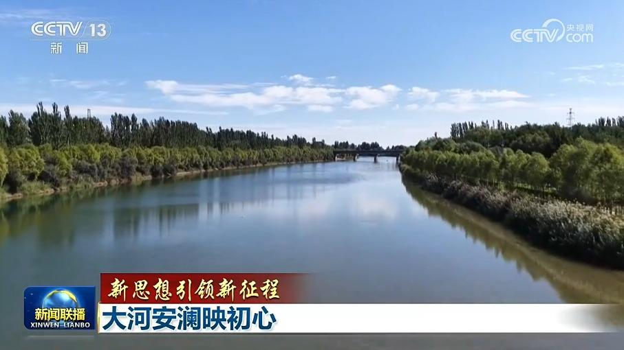
【新思想引领新征程】大河安澜映初心
黄河流域生态保护和高质量发展是国家重大发展战略。习近平总书记指出：“既要谋划长远，又要干在当下，一张蓝图绘到底，一茬接着一茬干，让黄河造福人民。”


黄河流域生态保护和高质量发展是国家重大发展战略。习近平总书记指出：“既要谋划长远，又要干在当下，一张蓝图绘到底，一茬接着一茬干，让黄河造福人民。”
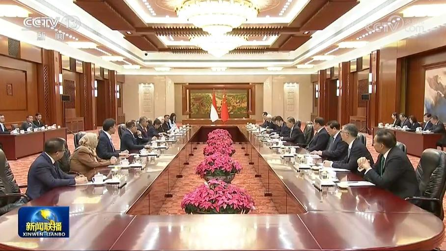
全国人大常委会委员长赵乐际20日在京会见印度尼西亚人民协商会议主席穆扎尼。赵乐际表示，近年来，中印尼关系发展势头良好，习近平主席同普拉博沃总统就构建具有地区和全球影响力的中印尼命运共同体达成重要共识，开启了双边关系崭新篇章。中方愿同印尼方遵循两国元首战略引领，推动两国友好事业不断取得新成果。中国全国人大愿同印尼人协保持密切交往，拓展交流合作，深化治国理政经验交流，更好服务各自国家发展振兴。
全国人大常委会委员长赵乐际20日在北京人民大会堂同澳大利亚联邦议会众议长迪克举行会谈。
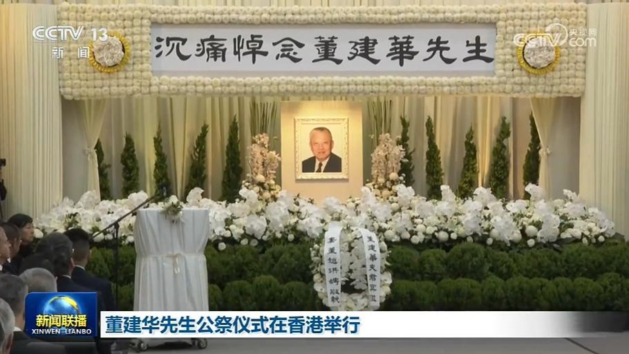
董建华先生公祭仪式在香港举行董建华先生逝世后，习近平李强赵乐际王沪宁蔡奇丁薛祥李希韩正胡锦涛等同志，通过各种形式对董建华先生逝世表示沉痛哀悼并向其亲属表示深切慰问
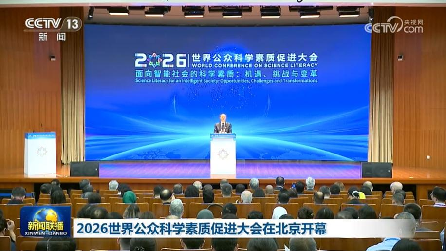
2026世界公众科学素质促进大会20日在北京开幕。与会嘉宾认为，在习近平主席致首届大会贺信精神的指引下，中国深入实施全民科学素质提升行动，共同发起成立世界公众科学素质组织，为推动全球科学素质建设与合作作出积极贡献。人类正在迈向智能社会，要强化科技赋能，涵养公众的科学文化素质；践行全球文明倡议，促进各国有效提升科普能力；健全科技治理体系，推动智能社会向善发展。
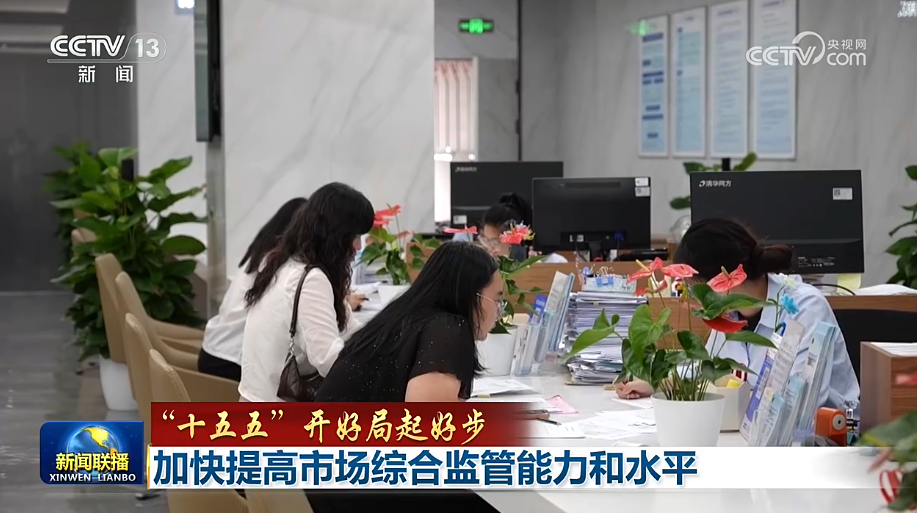
国务院新闻办公室今天（9月20日）举行“开局起步‘十五五’”系列主题新闻发布会，市场监管总局相关负责人介绍“十五五”时期推动市场监管高质量发展有关情况。
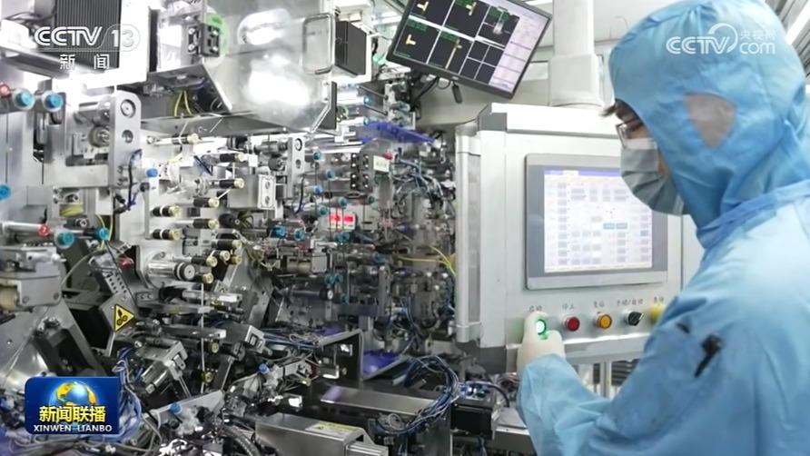
商务部最新数据显示，今年1—8月，全国新设立外商投资企业42582家，同比增长0.3%；实际使用外资金额4799.5亿元人民币。
在第23届中国—东盟博览会上，记者发现，中国超大市场和日新月异的新发展新变化正给东盟各国带来更多合作共赢机遇。
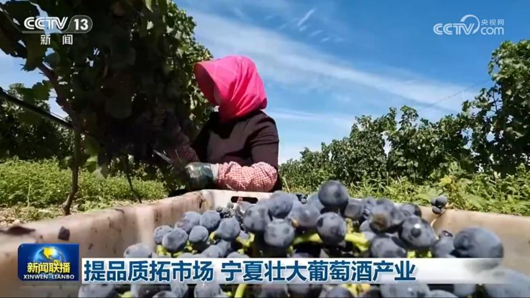
依托独特的资源优势，宁夏将荒漠化治理与葡萄酒产业发展相结合，通过东西协作、文旅融合等方式，推动葡萄酒等优势特色产业持续做强壮大。
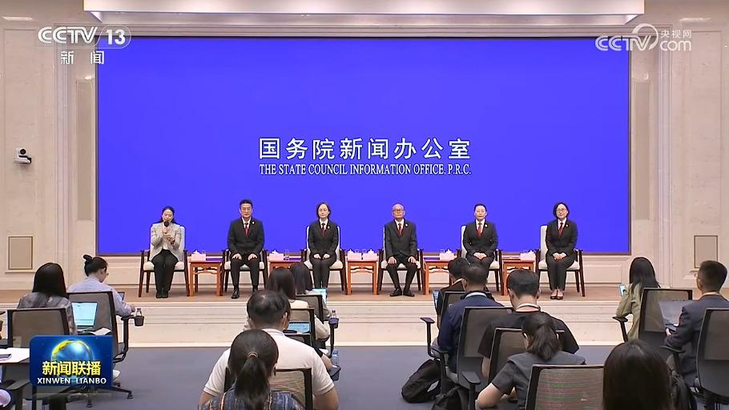
国务院新闻办公室今天（9月20日）举行“新征程上的奋斗者”中外记者见面会。5位来自法院系统的代表，围绕“让公平正义可感可触，让群众获得感更实更足”主题与中外记者见面交流，讲述他们在民事审判、未成年人审判、知识产权审判、环境资源审判、执行等领域的实践与感悟。彰显了新时代人民法官忠诚履职、担当作为的精神风貌，也展现了人民法院为大局服务、为人民司法的生动实践。
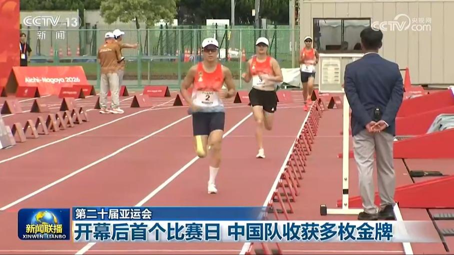
第二十届亚运会开幕后首个比赛日，在现代五项比赛中，由张明煜、吴希瑶、付静、孟鑫组成的中国队夺得女子团体金牌，这是本届亚运会中国体育代表团夺得的首枚金牌；李刘畅获得男子个人赛金牌。在女子10米气步枪团体赛中，由王子菲、韩佳予、杜雨宸组成的中国队以1904.2环的成绩夺得金牌，并打破世界纪录。……
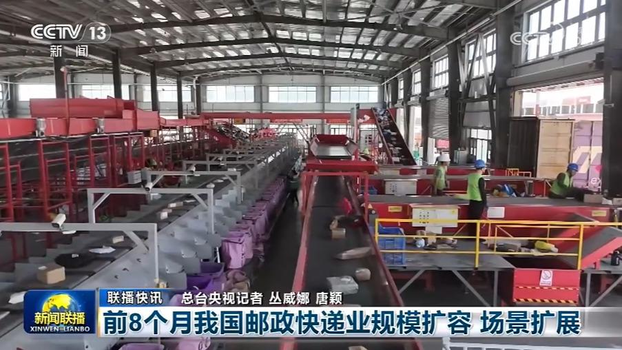
8月份全社会用电量突破万亿千瓦时
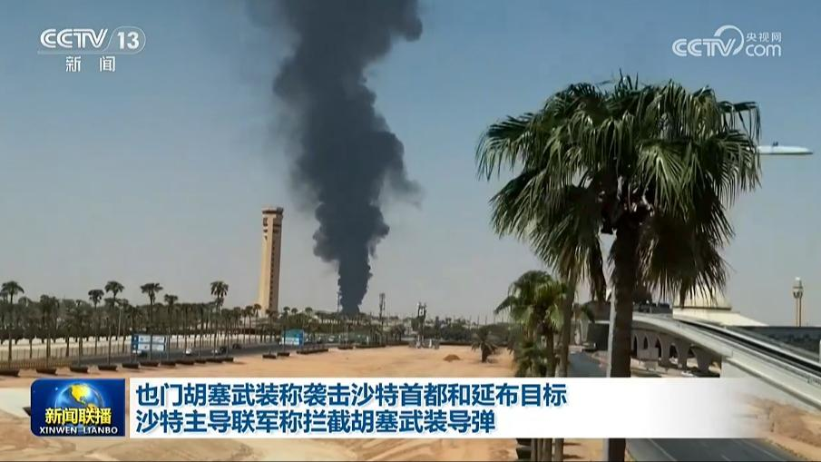
沙特阿拉伯首都利雅得19日两度传出爆炸声，哈立德国王国际机场附近升起浓烟。也门胡塞武装当晚称，为回应沙特对也门的空袭，该组织使用导弹和无人机袭击了利雅得的“敏感目标”以及沙特阿美石油公司位于延布的设施。
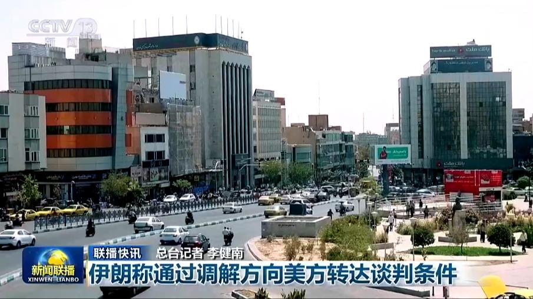
伊朗称通过调解方向美方转达谈判条件